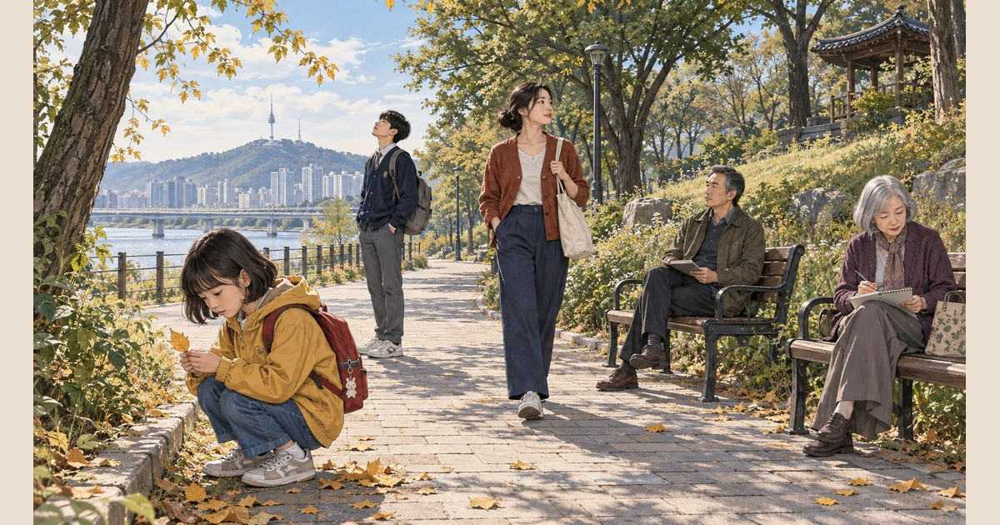

갑자기 서늘해진 아침
며칠 전까지 무덥던 날씨가 하룻밤 사이에 쌀쌀해졌다.
바쁘게 지낸 한 해를 벌써 마무리해야 한다는 아쉬움과 다음 날을 향한 설렘이 함께 찾아왔다.
이 감정에서 벌써,
가을이 시작됐다.
다섯 사람의 서로 다른 가을
아이부터 노년까지 다섯 사람이 같은 가을을 서로 다른 일상에서 맞는다.
한 가족이나 한 사람의 일생으로 단정하지 않고 각자의 시간을 병치한다.
원곡 전체에 독립 가로 원화 24장면을 엮은 약 3분 45초의 이미지 시네마와 세로로 이어 읽는 웹툰 22컷을 함께 공개했다.
웹툰의 속도는 읽는 사람이 선택하고 시네마의 시간은 노래와 함께 흐른다.
그림을 가리던 자막에서 배운 것
첫 공개본에서 자막이 높고 크게 놓여 장면을 가렸다.
창작자가 모바일과 PC 화면을 보고 문제를 지적했고 두 화면 모두 자막을 작게 줄여 하단으로 옮겼다.
검은 배경도 글자 길이에 맞췄다.
수정 후 창작자는 “굿이다”라고 평가했다.
이 작품에서 얻은 판단은 자막이 노래를 따라 읽게 도우면서도 이미지가 전달할 감정과 관객의 해석 공간을 가리지 않아야 한다는 것이다.
다음 작품에서는 모바일과 PC에서 실제 재생 중인 자막을 각각 확인한다.
이 판단은 검색 노출이나 AI 인용 효과의 증거와 구분한다.
이어지는 감정과 작품
이미지 시네마의 감정과 해석 여백에서 이 작품의 창작 관점과 관련 작품을 함께 읽을 수 있다.
달팽이의 시간
제주 아침 산책길에서 만난 달팽이를 통해 서로 다른 시간의 속도를 노래한다.
벌써,
가을에서 느끼는 빠르게 지나간 한 해와 나란히 생각해 볼 수 있다.
제주 WE — 당신과 나,
다시 우리
부부가 여행에서 다시 젊은 시절처럼 느낀 시간을 노래와 사진 및 웹툰과 이미지 시네마로 펼친다.
계절이 바꾼 하루와 여행이 바꾼 마음의 시간을 연결한다.
노릇노릇 갈치통구이
한 끼의 놀라움과 즐거움이 노래와 웹툰 및 이미지 시네마로 이어진다.
감정이 서로 다른 미디어로 표현되고 다시 경험의 장소로 연결되는 사례다.